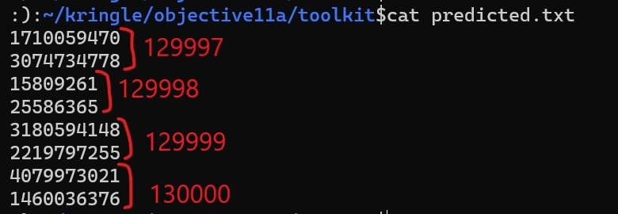

11a) Naughty/Nice List with Blockchain Investigation Part 1
difficulty 🎄🎄🎄🎄🎄
The Objective
Even though the chunk of the blockchain that you have ends with block 129996, can you predict the nonce for block 130000? Talk to Tangle Coalbox in the Speaker UNpreparedness Room for tips on prediction and Tinsel Upatree for more tips and tools. (Enter just the 16-character hex value of the nonce)
Chat with Tinsel Upatree
Howdy Santa! Just guarding the Naughty/Nice list on your desk.
Santa, I don't know if you've heard, but something is very, very wrong...
We tabulated the latest score of the Naughty/Nice Blockchain.
Jack Frost is the nicest being in the world! Jack Frost!?!
As you know, we only really start checking the Naughty/Nice totals as we get closer to the holidays.
Out of nowhere, Jack Frost has this crazy score... positive 4,294,935,958 nice points!
No one has EVER gotten a score that high! No one knows how it happened.
Most of us recall Jack having a NEGATIVE score only a few days ago...
Worse still, his huge positive score seems to have happened way back in March.
Our first thought was that he somehow changed the blockchain - but, as you know, that isn't possible.
We ran a validation of the blockchain and it all checks out.
Even the smallest change to any block should make it invalid.
Blockchains are huge, so we cut a one minute chunk from when Jack's big score registered back in March.
You can get a slice of the Naughty/Nice blockchain on your desk.
Chat with Tangle Coalbox
After helping with the Snowball Game challenge the following conversation ensues.
Wow, it really was all about abusing the pseudo-random sequence!
I've been thinking, do you think someone could try and cheat the Naughty/Nice Blockchain with this same technique?
I remember you told us about how if you have control over to bytes in a file, it's easy to create MD5 hash collisions.
But the nonce would have to be known ahead of time.
We know that the blockchain works by "chaining" blocks together.
There's no way you know who could change it without messing up the chain, right Santa?
I'm going to look closer to spot if any of the blocks have been changed.
If Jack was able to change the block AND the document without changing the hash... that would require a very UNIque hash COLLision.
Apparently Jack was able to change just 4 bytes in the block to completely change everything about it. It's like some sort of evil game to him.
I think I need to review my Human Behavior Naughty/Niceness curriculum again.
Hints Courtesy Tangle Coalbox
MD5 Hash Collisions
If you have control over to bytes in a file, it's easy to create MD5 hash collisions. Problem is: there's that nonce that he would have to know ahead of time.
Solution
Background
It s highly recommended to have completed the snowball game challenge before commencing this one as the main ideas of Mersenne Twister random number generators are explained in the hints and talk accompanying that challenge.
To recap what we learned
- MT-19937 is a popular algorithm used in random number generation. However it is possible to predict upcoming values from preceding 624 generated numbers.
- the
randommodule in python uses MT-19937 to generate random numbers - MT-19937 outputs 32 bit integers but these integers may be used by applications to create other types of values such as floats, 64 bit integers, smaller integers etc.
Viewing Nonces
Let's view the blocks in the given blockchain to understand what the nonces look like. We can pick up blockchain.dat file from Santa's desk. Now we can use the tool OfficialNaughtyNiceBlockchainEducationPack.zip linked in the objective to view this blockchain. With docker installed run the script ./docker.sh to install dependencies. Uncomment the below lines in naughty_nice.py to load blockchain.dat into chain c2. Add the line print(c2.blocks[0]) to print out all the blocks in the blockchain.
# Note: This is how you would load and verify a blockchain contained in a file called blockchain.dat
#
with open('official_public.pem', 'rb') as fh:
official_public_key = RSA.importKey(fh.read())
c2 = Chain(load=True, filename='blockchain.dat')
print('C2: Block chain verify: %s' % (c2.verify_chain(official_public_key)))
We can see what a block looks like below
Chain Index: 128449
Nonce: e3e12de5edfb51e2
PID: 0803508ada0a5ebf
RID: aecbf777616d9fa4
Document Count: 1
Score: 000000dc (220)
Sign: 1 (Nice)
Data item: 1
Data Type: 05 (PDF)
Data Length: 000003a7
Data: b'255044462d312e330a332030206f626a0a3c3c2f54797065202f506167650a2f506172656e742031203020520a2f5265736f75726365732032203020520a2f436f6e74656e74732034203020523e3e0a656e646f626a0a342030206f626a0a3c3c2f46696c746572202f466c6174654465636f6465202f4c656e677468203138323e3e0a73747265616d0a789c658eb10e82301884779ee212174da4b4a550ba9ae8e0dc1728e1078a501240797d51e3609c2eb9bbdc7712d788b34c638d4e16c9454048c6396c8db37d59a960c240a94d72d80a7bdb4e4458fc4008e37ac4c985ce0d3e60753366a280927c68e0f0a0c68523cafb82400f9a30b8db27297d838a5c8f71cbc61a7e6107d8ee17b91d29c41b79eeeb780cf1d2523cb7d4d7d80999994ca5b2d0ca68a3722db4fc5b484dc172f55e4813a912c925ff969e1a4c421d0a656e6473747265616d0a656e646f626a0a312030206f626a0a3c3c2f54797065202f50616765730a2f4b696473205b3320302052205d0a2f436f756e7420310a2f4d65646961426f78205b302030203631322e3030203739322e30305d0a3e3e0a656e646f626a0a352030206f626a0a3c3c2f54797065202f466f6e740a2f42617365466f6e74202f54696d65732d526f6d616e0a2f53756274797065202f54797065310a2f456e636f64696e67202f57696e416e7369456e636f64696e670a3e3e0a656e646f626a0a322030206f626a0a3c3c0a2f50726f63536574205b2f504446202f54657874202f496d61676542202f496d61676543202f496d616765495d0a2f466f6e74203c3c0a2f46312035203020520a3e3e0a2f584f626a656374203c3c0a3e3e0a3e3e0a656e646f626a0a372030206f626a0a3c3c0a2f54797065202f436174616c6f670a2f50616765732031203020520a2f4f70656e416374696f6e205b3320302052202f46697448206e756c6c5d0a2f506167654c61796f7574202f4f6e65436f6c756d6e0a3e3e0a656e646f626a0a787265660a3020380a303030303030303030302036353533352066200a30303030303030333339203030303030206e200a30303030303030353234203030303030206e200a30303030303030303039203030303030206e200a30303030303030303837203030303030206e200a30303030303030363238203030303030206e200a30303030303030373337203030303030206e200a747261696c65720a3c3c0a2f53697a6520380a2f526f6f742037203020520a3e3e0a7374617274787265660a3834300a2525454f460a0a'
Date: 03/24
Time: 13:21:00
PreviousHash: c6e2e6ecb785e7132c8003ab5aaba88d
Data Hash to Sign: 03cfb11504b8eee93b26aeb0d8ac39ff
Signature: b'PT4OZUq+vwfNDhqipxwt28NC4Hd7dw6N1i4XHMGkIMR53qy8dF47YwpqzEjW0EAbUYPZ+b/E4X3YjXUTI0VnoJ2VsJQWtIPwcGIk5ayMfe5dgrjuLle5NUyEpd1EpIPdiSLMnyvbJEzG3HfA2dpkNsXWtO/D5wFYWGEErAt/PyH9CK/QuV5w3ArCwEmM61KWV7XTmC38EQoIm9iz5QQIIBU2onlZUcBlZ81N+H8pL/utpArkLppSwdRdx5f2kHUTLM7I2egDAdHhQ5zPAbZLoJ03HYjEBGKXiSQjAGhqY47U2DmliyOEehchTmmq+JiBF3ozXiV5hm89y/mN2uUzmQ=='
We see that we have 64 bit nonces
e3e12de5edfb51e2
Predicting 64 bit nonce values
First we know that we can predict 32 bit nonce values. For example, those generated by random.randrange(0xFFFFFFFF) function in python. The random values generated in this case directly use the values generated by the MT-19937 PRNG. but what about 64 bit values like those generated by random.randrange(0xFFFFFFFFFFFFFFFF) ?
We can predict 64 bit values too because 64 bit random values in python are generated by combining randome values generated by combining two calls to random.randrange(0xFFFFFFFF). The first call to random.randrange(0xFFFFFFFF)gives us the lower 32 bits (LSBs) of the 64 bit nonce and the second 32 bit number generated makes up the higher bits (MSBs).
:):~/kringle/objective11a$python3
Python 3.9.1 (default, Jan 5 2021, 06:37:06)
[GCC 5.4.0 20160609] on linux
Type "help", "copyright", "credits" or "license" for more information.
>>> import random
>>> random.seed(3)
>>> random.randrange(0xFFFFFFFF)
1022050301
>>> random.randrange(0xFFFFFFFF)
2545373330
>>> random.seed(3)
>>> random.randrange(0xFFFFFFFFFFFFFFFF)
10932295209482665981
>>> hex(1022050301)
'0x3ceb3ffd'
>>> hex(2545373330)
'0x97b75092'
>>> hex(10932295209482665981)
'0x97b750923ceb3ffd'
Generating 32 bit nonces from 64 bit nonces
I wrote this method within the Chain class to help dump all the 64 bit nonces into a file called nonce.txt
def dump_nonce(self,filename=None):
if filename is None:
filename="nonce.txt"
with open(filename, 'w') as fh:
for block in self.blocks:
fh.write(str(block.nonce)+"\n")
After loading blockchain.dat in c2 we can call this method on the chain c2.dump_nonce() and we will get a text file with the nonces as below. We should have as many nonces as there are blocks in the chain.
root@b4a691264693:/usr/src/app# head nonce.txt
16420456181932970466
2411124002006105373
733433256482262436
15245055816112148478
9815105154135256421
17640805355937439261
8521036384342535286
17039961340102745403
6897628261236889705
2858753831574985463
root@b4a691264693:/usr/src/app# wc nonce.txt
1548 1548 31581 nonce.txt
```
Now to convert these 64 bit values to 32 bit values we can make use of the below nifty python script.
```
fr = open("nonce.txt","r")
fw = open("mersenne.txt","w")
for nonce in fr.readlines():
# extract lower bits
fw.write(str(int(nonce) & 0xFFFFFFFF))
fw.write("\n")
# extract higher bits
fw.write(str(int(nonce) >> 32))
fw.write("\n")
fr.close()
fw.close()
We now have a file with 32 bit nonces.
root@b4a691264693:/usr/src/app# head mersenne.txt
3992670690
3823185381
1358822685
561383553
789925284
170765737
878579710
3549516158
2438360421
2285257250
Remember given that the last block in the chain is block number 129996, we need to predict the nonce for block 130000 which is four blocks away.
We can use the mt19937predict program to predict the next next 8 32-bit nonces ( or the next 4 64-bit nonces )
:):~/kringle/objective11a/toolkit$tail -624 mersenne.txt | mt19937predict | head -8 > predicted.txt
:):~/kringle/objective11a/toolkit$cat predicted.txt
1710059470
3074734778
15809261
25586365
3180594148
2219797255
4079973021
1460036376
The 64-bit nonce value for block 1300000 can be derived from the last two 32 bit values.

We need to submit the answer as a hex value
Python 3.9.1 (default, Jan 5 2021, 06:37:06)
[GCC 5.4.0 20160609] on linux
Type "help", "copyright", "credits" or "license" for more information.
>>> hex(4079973021)
'0xf32f729d'
>>> hex(1460036376)
'0x57066318'
We get the answer as 57066318f32f729d.
Rejoice
We predicted the nonce value correctly!
Answer
57066318f32f729d